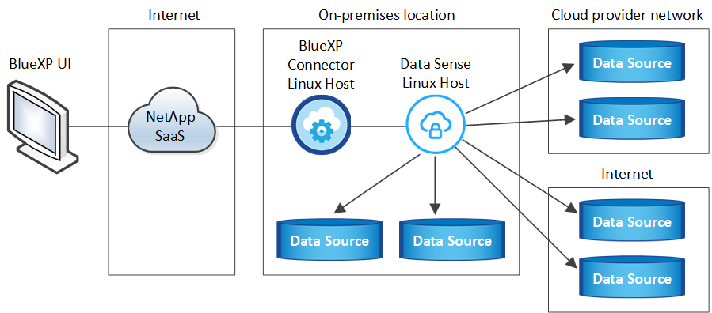
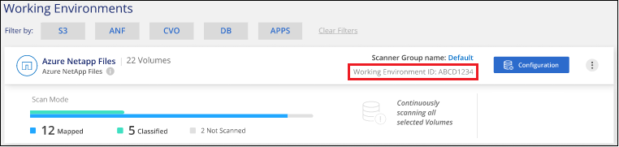

Demander de modifier un document
Demander de modifier un document Modifier sur GitHub
Modifier sur GitHub Guide des contributeurs
Guide des contributeursDéployez Cloud Data Sense sur un hôte Linux avec accès Internet
Contributeurs
Suivez quelques étapes pour déployer Cloud Data Sense sur un hôte Linux de votre réseau ou dans le cloud, qui dispose d’un accès Internet.
L’installation sur site peut être une bonne option si vous préférez analyser les systèmes ONTAP sur site à l’aide d’une instance Data Sense également située sur site, mais ce n’est pas une exigence. Le logiciel fonctionne exactement de la même manière quelle que soit la méthode d’installation choisie.
Les installations sur site classiques comportent les composants et les connexions suivants.

Pour les très grandes configurations dans lesquelles vous numérisez des pétaoctets de données, vous pouvez inclure plusieurs hôtes pour bénéficier d’une puissance de traitement supplémentaire. Lorsque vous utilisez plusieurs systèmes hôtes, le système principal est appelé nœud Manager et les systèmes supplémentaires qui fournissent une puissance de traitement supplémentaire sont appelés nœuds de scanner.
Notez que vous pouvez également "Déployer Data Sense dans un site sur site qui ne dispose pas d’un accès Internet" pour des sites totalement sécurisés.
Démarrage rapide
Pour commencer rapidement, suivez ces étapes ou faites défiler jusqu’aux sections restantes pour obtenir de plus amples informations.
 Créer un connecteur
Créer un connecteurSi vous n’avez pas encore de connecteur, "Déployez le connecteur sur site" Sur un hôte Linux de votre réseau ou dans le cloud.
Vous pouvez également créer un connecteur avec votre fournisseur cloud. Voir "Création d’un connecteur dans AWS", "Création d’un connecteur dans Azure", ou "Création d’un connecteur dans GCP".
 Passer en revue les prérequis
Passer en revue les prérequisAssurez-vous que votre environnement est conforme aux conditions préalables. Cela inclut l’accès Internet sortant pour l’instance, la connectivité entre le connecteur et Cloud Data SENSE sur le port 443, etc. Voir la liste complète.
Vous avez également besoin d’un système Linux qui répond à exigences suivantes.
 Téléchargez et déployez Cloud Data Sense
Téléchargez et déployez Cloud Data SenseTéléchargez le logiciel Cloud Data SENSE sur le site de support NetApp et copiez le fichier d’installation sur l’hôte Linux que vous prévoyez d’utiliser. Lancez ensuite l’assistant d’installation et suivez les invites pour déployer l’instance de détection de données.
 Abonnez-vous au service Cloud Data Sense
Abonnez-vous au service Cloud Data SenseLes 1 premiers To de données scanners Cloud Data SENSE dans BlueXP sont gratuits. Un abonnement à votre fournisseur cloud Marketplace, ou une licence BYOL de NetApp, est nécessaire pour continuer l’analyse des données après ce point.
Créer un connecteur
Un connecteur BlueXP est nécessaire avant de pouvoir installer et utiliser Data Sense. Dans la plupart des cas, vous aurez probablement configuré un connecteur avant d’essayer d’activer le cloud Data SENSE "Les fonctionnalités BlueXP nécessitent un connecteur", mais il y a des cas où vous devrez en configurer un maintenant.
Pour en créer un dans votre environnement de fournisseur cloud, consultez la section "Création d’un connecteur dans AWS", "Création d’un connecteur dans Azure", ou "Création d’un connecteur dans GCP".
Dans certains cas, vous devez utiliser un connecteur déployé dans un fournisseur de cloud spécifique :
-
Pour l’analyse des données dans Cloud Volumes ONTAP dans AWS, Amazon FSX pour ONTAP ou dans des compartiments AWS S3, vous utilisez un connecteur dans AWS.
-
Pour analyser les données dans Cloud Volumes ONTAP dans Azure ou dans Azure NetApp Files, vous utilisez un connecteur dans Azure.
Pour Azure NetApp Files, il doit être déployé dans la même région que les volumes que vous souhaitez analyser.
-
Pour l’analyse des données dans Cloud Volumes ONTAP dans GCP, vous utilisez un connecteur dans GCP.
Vous pouvez analyser les systèmes ONTAP sur site, les partages de fichiers non NetApp, le stockage objet S3 générique, les bases de données, les dossiers OneDrive, les comptes SharePoint et les comptes Google Drive à l’aide de ces connecteurs cloud.
Notez que vous pouvez également "Déployez le connecteur sur site" Sur un hôte Linux de votre réseau ou dans le cloud. Certains utilisateurs qui prévoient d’installer Data Sense sur site peuvent également choisir d’installer le connecteur sur site.
Comme vous pouvez le voir, il peut y avoir des situations où vous devez utiliser "Plusieurs connecteurs".
Vous aurez besoin de l’adresse IP ou du nom d’hôte du système de connecteur lors de l’installation de Data Sense. Vous aurez ces informations si vous avez installé le connecteur sur votre site. Si le connecteur est déployé dans le cloud, vous pouvez trouver ces informations à partir de la console BlueXP : cliquez sur l’icône aide, sélectionnez support et cliquez sur BlueXP Connector.
Préparez le système hôte Linux
Le logiciel de détection des données doit être exécuté sur un hôte qui répond à des exigences spécifiques du système d’exploitation, de la RAM, des exigences logicielles, etc. L’hôte Linux peut se trouver sur votre réseau ou dans le cloud. Data Sense n’est pas pris en charge sur un hôte partagé avec d’autres applications ; l’hôte doit être un hôte dédié.
-
Système d’exploitation : Red Hat Enterprise Linux ou CentOS versions 8.0 à 8.6
-
La version 7.8 ou 7.9 peut être utilisée, mais la version du noyau Linux doit être 4.0 ou supérieure
-
Le système d’exploitation doit pouvoir installer le moteur docker
-
-
Disque : SSD avec 500 Gio disponible sur /, ou
-
100 Gio disponible sur /opt
-
400 Gio disponible sur /var
-
5 Gio sur /tmp
-
-
RAM : 64 Go (la mémoire d’échange doit être désactivée sur l’hôte)
-
CPU : 16 cœurs
Notez que vous pouvez déployer Data Sense sur un système avec moins de processeurs et moins de RAM, mais il y a des limites lors de l’utilisation de ces systèmes. Voir "Utilisation d’un type d’instance plus petit" pour plus d’informations.
-
Gestion des abonnements Red Hat : un système Red Hat Enterprise Linux doit être enregistré auprès de la gestion des abonnements Red Hat. S’il n’est pas enregistré, le système ne peut pas accéder aux référentiels pour mettre à jour les logiciels tiers requis au cours de l’installation.
-
Logiciel supplémentaire : le logiciel suivant doit être installé sur l’hôte. S’il n’existe pas déjà sur l’hôte, le programme d’installation installe le logiciel pour vous :
-
Docker Engine version 19 ou ultérieure. "Voir les instructions d’installation".
-
Python 3 version 3.6 ou ultérieure. "Voir les instructions d’installation".
-
-
Firesund considérations: Si vous prévoyez d’utiliser
firewalld, Nous vous recommandons de l’activer avant d’installer Data Sense. Exécutez les commandes suivantes pour configurerfirewalldPour qu’il soit compatible avec Data Sense :firewall-cmd --permanent --add-service=http firewall-cmd --permanent --add-service=https firewall-cmd --permanent --add-port=80/tcp firewall-cmd --permanent --add-port=8080/tcp firewall-cmd --permanent --add-port=443/tcp firewall-cmd --reload
Si vous prévoyez d’utiliser d’autres hôtes Data Sense, ajoutez ces règles à votre système principal à l’heure actuelle :
firewall-cmd --permanent --add-port=2377/tcp firewall-cmd --permanent --add-port=7496/udp firewall-cmd --permanent --add-port=7496/tcp firewall-cmd --permanent --add-port=4789/udp
Si vous activez
firewalldAprès avoir installé Data Sense, vous devez redémarrer docker.

|
L’adresse IP du système hôte Data Sense ne peut pas être modifiée après l’installation. |
Vérifier les prérequis BlueXP et Data Sense
Consultez les conditions préalables suivantes pour vous assurer que votre configuration est prise en charge avant de déployer Cloud Data SENSE sur un système Linux.
- Activation de l’accès Internet sortant à partir du Cloud Data SENSE
-
Cloud Data Sense requiert un accès Internet sortant. Si votre réseau virtuel ou physique utilise un serveur proxy pour l’accès à Internet, assurez-vous que l’instance de détection de données dispose d’un accès Internet sortant pour contacter les points de terminaison suivants.
Terminaux Objectif https://api.bluexp.netapp.com
Communication avec le service BlueXP, qui inclut les comptes NetApp.
https://netapp-cloud-account.auth0.com https://auth0.com
Communication avec le site Web BlueXP pour l’authentification centralisée des utilisateurs.
https://support.compliance.api.bluexp.netapp.com/ https://hub.docker.com https://auth.docker.io https://registry-1.docker.io https://index.docker.io/ https://dseasb33srnrn.cloudfront.net/ https://production.cloudflare.docker.com/
Permet d’accéder aux images logicielles, aux manifestes, aux modèles et à l’envoi de journaux et de mesures.
https://support.compliance.api.bluexp.netapp.com/
Permet à NetApp de diffuser des données à partir d’enregistrements d’audit.
https://github.com/docker https://download.docker.com http://mirror.centos.org http://mirrorlist.centos.org http://mirror.centos.org/centos/7/extras/x86_64/Packages/container-selinux-2.107-3.el7.noarch.rpm
Fournit les packages requis pour l’installation.
- Assurez-vous que le connecteur BlueXP dispose des autorisations requises
-
Assurez-vous que le connecteur dispose d’autorisations pour déployer des ressources et créer des groupes de sécurité pour l’instance Cloud Data Sense. Vous trouverez les dernières autorisations BlueXP dans "Règles fournies par NetApp".
- Assurez-vous de continuer d’exécuter le contrôle des données cloud
-
Le serveur Cloud Data Sense doit rester activé pour analyser en continu vos données.
- Assurez la connectivité de votre navigateur Web au cloud Data Sense
-
Une fois Cloud Data SENSE activé, assurez-vous que les utilisateurs accèdent à l’interface BlueXP à partir d’un hôte connecté à l’instance Data Sense.
L’instance de détection de données utilise une adresse IP privée pour s’assurer que les données indexées ne sont pas accessibles à Internet. Par conséquent, le navigateur Web que vous utilisez pour accéder à BlueXP doit disposer d’une connexion à cette adresse IP privée. Cette connexion peut provenir d’une connexion directe avec votre fournisseur de cloud (par exemple, un VPN), ou d’un hôte situé dans le même réseau que l’instance Data Sense.
Vérifiez que tous les ports requis sont activés
Vous devez vous assurer que tous les ports requis sont ouverts pour la communication entre le connecteur, Data Sense, Active Directory et vos sources de données.
| Type de connexion | Ports | Description |
|---|---|---|
Connecteur <> détection des données |
8080 (TCP), 443 (TCP) et 80 |
Le groupe de sécurité du connecteur doit autoriser le trafic entrant et sortant via le port 443 vers et depuis l’instance de détection des données. Assurez-vous que le port 8080 est ouvert pour voir la progression de l’installation dans BlueXP. |
Connecteur <> cluster ONTAP (NAS) |
443 (TCP) |
BlueXP détecte les clusters ONTAP via HTTPS. Si vous utilisez des stratégies de pare-feu personnalisées, elles doivent répondre aux exigences suivantes :
|
Cluster de détection des données <> ONTAP |
|
La détection des données requiert une connexion réseau à chaque sous-réseau Cloud Volumes ONTAP ou système ONTAP sur site. Les groupes de sécurité pour Cloud Volumes ONTAP doivent autoriser les connexions entrantes à partir de l’instance de détection de données. Assurez-vous que ces ports sont ouverts à l’instance de détection de données :
Les règles d’exportation de volumes NFS doivent autoriser l’accès à partir de l’instance Data Sense. |
Détection de données <> Active Directory |
389 (TCP ET UDP), 636 (TCP), 3268 (TCP) ET 3269 (TCP) |
Un Active Directory doit déjà être configuré pour les utilisateurs de votre entreprise. En outre, Data Sense nécessite des identifiants Active Directory pour analyser les volumes CIFS. Vous devez disposer des informations pour Active Directory :
|
Si vous utilisez plusieurs hôtes Data Sense pour fournir une puissance de traitement supplémentaire pour analyser vos sources de données, vous devez activer des ports/protocoles supplémentaires. "Voir la configuration de port supplémentaire requise".
Déployer des solutions Data Sense sur site
Pour les configurations standard, le logiciel est installé sur un système hôte unique. Découvrez ces étapes ici.

Pour les très grandes configurations dans lesquelles vous numérisez des pétaoctets de données, vous pouvez inclure plusieurs hôtes pour bénéficier d’une puissance de traitement supplémentaire. Découvrez ces étapes ici.
Voir Préparation du système hôte Linux et Vérification des prérequis Avant de déployer Cloud Data Sense, vous devez consulter la liste complète des exigences.
Les mises à niveau du logiciel Data Sense sont automatisées tant que l’instance est connectée à Internet.
|
|
Cloud Data Sense n’est actuellement pas en mesure d’analyser les compartiments S3, Azure NetApp Files ou FSX pour ONTAP lorsque le logiciel est installé sur site. Dans ce cas, vous devez déployer un connecteur et une instance de Data Sense dans le cloud et "Basculer entre les connecteurs" pour les différentes sources de données. |
Installation à un seul hôte pour les configurations courantes
Suivez ces étapes pour installer le logiciel Data Sense sur un hôte sur site unique.
-
Vérifiez que votre système Linux est conforme à la configuration requise pour l’hôte.
-
(Facultatif) Vérifiez que le système est équipé des deux packages logiciels prérequis (Docker Engine et Python 3). Le programme d’installation installe ce logiciel s’il n’est pas déjà installé sur le système.
-
Assurez-vous que vous disposez des privilèges root sur le système Linux.
-
Si vous utilisez un proxy et qu’il effectue une interception TLS, vous devez connaître le chemin d’accès sur le système Linux Data Sense où sont stockés les certificats CA TLS.
-
Vérifiez que votre environnement hors ligne répond aux besoins autorisations et connectivité.
-
Téléchargez le logiciel Cloud Data SENSE sur le "Site de support NetApp". Le fichier que vous devez sélectionner est nommé DATASESNSE-INSTALLER-<version>.tar.gz.
-
Copiez le fichier d’installation sur l’hôte Linux que vous envisagez d’utiliser (à l’aide de
scpou une autre méthode). -
Dans BlueXP, sélectionnez gouvernance > Classification.
-
Cliquez sur Activer détection de données.

-
Cliquez sur Activer Data Sense pour démarrer l’assistant de déploiement sur site.
-
Dans la boîte de dialogue Deploy Data Sense on local, copiez la commande fournie et collez-la dans un fichier texte afin que vous puissiez l’utiliser ultérieurement, puis cliquez sur Fermer. Par exemple :
sudo ./install.sh -a 12345 -c 27AG75 -t 2198qq -
Décompressez le fichier d’installation sur la machine hôte, par exemple :
tar -xzf DATASENSE-INSTALLER-V1.16.1.tar.gz -
Lorsque le programme d’installation vous le demande, vous pouvez entrer les valeurs requises dans une série d’invites, ou vous pouvez fournir les paramètres requis comme arguments de ligne de commande au programme d’installation.
Notez que le programme d’installation effectue une pré-vérification afin de s’assurer que vos exigences système et réseau sont en place pour une installation réussie.
Entrez les paramètres comme demandé : Saisissez la commande complète : -
Coller les informations copiées à partir de l’étape 6 :
sudo ./install.sh -a <account_id> -c <agent_id> -t <token> -
Entrez l’adresse IP ou le nom d’hôte de la machine hôte Data Sense afin qu’elle soit accessible par l’instance de connecteur.
-
Entrez l’adresse IP ou le nom d’hôte de la machine hôte BlueXP Connector afin qu’elle soit accessible par l’instance Data Sense.
-
Entrez les détails du proxy comme vous y êtes invité. Si votre connecteur BlueXP utilise déjà un proxy, il n’est pas nécessaire de saisir à nouveau ces informations ici car Data Sense utilisera automatiquement le proxy utilisé par le connecteur.
Vous pouvez également créer l’ensemble de la commande à l’avance, en fournissant les paramètres d’hôte et de proxy nécessaires :
sudo ./install.sh -a <account_id> -c <agent_id> -t <token> --host <ds_host> --manager-host <cm_host> --proxy-host <proxy_host> --proxy-port <proxy_port> --proxy-scheme <proxy_scheme> --proxy-user <proxy_user> --proxy-password <proxy_password> --cacert-folder-path <ca_cert_dir>Valeurs variables :
-
Account_ID = ID du compte NetApp
-
Agent_ID = ID connecteur
-
token = jeton utilisateur jwt
-
Ds_host = adresse IP ou nom d’hôte du système Data Sense Linux.
-
Cm_host = adresse IP ou nom d’hôte du système de connecteurs BlueXP.
-
Proxy_host = IP ou nom d’hôte du serveur proxy si l’hôte est derrière un serveur proxy.
-
Proxy_port = Port pour se connecter au serveur proxy (80 par défaut).
-
Proxy_schéma = schéma de connexion : https ou http (par défaut : http).
-
Proxy_user = utilisateur authentifié pour se connecter au serveur proxy, si une authentification de base est requise.
-
Proxy_password = Mot de passe pour le nom d’utilisateur que vous avez spécifié.
-
CA_cert_dir = chemin sur le système Data Sense Linux contenant des bundles de certificat d’autorité de certification TLS supplémentaires. Requis uniquement si le proxy effectue une interception TLS.
-
Le programme d’installation de Cloud Data Sense installe des packages, installe docker, enregistre l’installation et installe Data Sense. L’installation peut prendre entre 10 et 20 minutes.
S’il y a une connectivité sur le port 8080 entre la machine hôte et l’instance de connecteur, vous verrez la progression de l’installation dans l’onglet détection de données de BlueXP.
Dans la page Configuration, vous pouvez sélectionner les sources de données à numériser.
Vous pouvez également "Configurez les licences pour Cloud Data Sense" à ce moment-là. Vous ne serez facturé que lorsque la quantité de données dépasse 1 To.
Ajoutez des nœuds de scanner à un déploiement existant
Vous pouvez ajouter d’autres nœuds de numérisation si vous trouvez que vous avez besoin d’une puissance de traitement plus élevée pour numériser vos sources de données. Vous pouvez ajouter les nœuds du scanner immédiatement après avoir installé le nœud du gestionnaire, ou vous pouvez ajouter un nœud du scanner ultérieurement. Par exemple, si vous réalisez que la quantité de données de l’une de vos sources de données a doublé ou triplé au bout de 6 mois, vous pouvez ajouter un nouveau nœud du scanner pour faciliter l’analyse des données.
Il existe deux façons d’ajouter des nœuds de scanner supplémentaires :
-
ajoutez un nœud pour faciliter la numérisation de toutes les sources de données
-
ajoutez un nœud pour faciliter l’analyse d’une source de données spécifique ou d’un groupe spécifique de sources de données
Par défaut, tous les nouveaux nœuds de scanner que vous ajoutez sont ajoutés au pool général de ressources de numérisation. Il s’agit du « groupe de scanner par défaut ». Dans l’image ci-dessous, il y a 1 nœud Manager et 3 nœuds de scanner dans le groupe « par défaut » qui sont tous des données de numérisation provenant des 6 sources de données.

Si vous souhaitez analyser certaines sources de données par des nœuds de scanner qui sont physiquement plus proches des sources de données, vous pouvez définir un nœud de scanner, ou un groupe de nœuds de scanner, pour analyser une source de données spécifique ou un groupe de sources de données. Dans l’image ci-dessous, il y a 1 nœud Manager et 3 nœuds scanner.
-
Le nœud Manager se trouve dans le groupe « par défaut » et il analyse 1 source de données
-
Le nœud du scanner 1 se trouve dans le groupe États-unis et analyse 2 sources de données
-
Les nœuds du scanner 2 et 3 se trouvent dans le groupe « europe » et partagent les tâches de numérisation pour 3 sources de données

Les groupes de lecteurs de détection de données peuvent être définis comme des zones géographiques distinctes où vos données sont stockées. Vous pouvez déployer plusieurs nœuds de scanner Data Sense dans le monde entier et choisir un groupe de scanner pour chaque nœud. De cette façon, chaque nœud du scanner analyse les données qui lui sont les plus proches. Plus le nœud du scanner est proche des données, mieux c’est, car il réduit la latence du réseau autant que possible lors de l’acquisition des données.
Vous pouvez choisir les groupes de scanner à ajouter à Data Sense et choisir leur nom. Data Sense ne fait pas valoir qu’un nœud mappé à un groupe de scanner nommé « europe » sera déployé en Europe.
Procédez comme suit pour installer d’autres nœuds du scanner Data Sense :
-
Préparez les systèmes hôtes Linux qui feront office de nœuds de scanner
-
Téléchargez le logiciel Data Sense sur ces systèmes Linux
-
Exécutez une commande sur le nœud Manager pour identifier les nœuds du scanner
-
Suivez les étapes de déploiement du logiciel sur les nœuds du scanner (et définissez éventuellement un « groupe de scanner » pour certains nœuds du scanner).
-
Si vous avez défini un scanner group, sur le nœud Manager :
-
Ouvrez le fichier « environnement_de_travail_vers_scanner_groupe_config.yml » et définissez les environnements de travail qui seront analysés par chaque groupe de scanner
-
Exécutez le script suivant pour enregistrer ces informations de mappage avec tous les nœuds du scanner :
update_we_scanner_group_from_config_file.sh
-
-
Vérifiez que tous vos systèmes Linux pour les nœuds du scanner sont conformes à la configuration requise pour l’hôte.
-
(Facultatif) Vérifiez que les deux packages logiciels prérequis sont installés sur les systèmes (Docker Engine et Python 3). Le programme d’installation installe ce logiciel s’il n’est pas déjà installé sur les systèmes.
-
Assurez-vous que vous disposez des privilèges root sur les systèmes Linux.
-
Vérifiez que votre environnement répond aux exigences requises autorisations et connectivité.
-
Vous devez disposer des adresses IP des hôtes du nœud scanner que vous ajoutez.
-
Vous devez disposer de l’adresse IP du système hôte du nœud Data Sense Manager
-
Vous devez disposer de l’adresse IP ou du nom d’hôte du système Connector, de votre ID de compte NetApp, de votre ID de client Connector et du jeton d’accès utilisateur. Si vous prévoyez d’utiliser des groupes de scanner, vous devrez connaître l’ID de l’environnement de travail pour chaque source de données de votre compte. Voir les étapes préalables ci-dessous pour obtenir ces informations.
-
Les ports et protocoles suivants doivent être activés sur tous les hôtes :
Port Protocoles Description 2377
TCP
Communications de gestion du cluster
7946
TCP, UDP
Communication inter-nœuds
4789
UDP
Superposition du trafic réseau
50
ESP
Trafic du réseau de superposition IPSec chiffré (ESP)
111
TCP, UDP
Serveur NFS pour le partage de fichiers entre les hôtes (requis de chaque nœud de scanner vers le nœud gestionnaire)
2049
TCP, UDP
Serveur NFS pour le partage de fichiers entre les hôtes (requis de chaque nœud de scanner vers le nœud gestionnaire)
-
Si vous utilisez
firewalldSur vos machines Data Sense, nous vous recommandons de l’activer avant d’installer Data Sense. Exécutez les commandes suivantes pour configurerfirewalldPour qu’il soit compatible avec Data Sense :firewall-cmd --permanent --add-service=http firewall-cmd --permanent --add-service=https firewall-cmd --permanent --add-port=80/tcp firewall-cmd --permanent --add-port=8080/tcp firewall-cmd --permanent --add-port=443/tcp firewall-cmd --permanent --add-port=2377/tcp firewall-cmd --permanent --add-port=7496/udp firewall-cmd --permanent --add-port=7496/tcp firewall-cmd --permanent --add-port=4789/udp firewall-cmd --reload
Si vous activez
firewalldAprès avoir installé Data Sense, vous devez redémarrer docker.
Procédez comme suit pour obtenir l’ID de compte NetApp, l’ID client Connector, le nom du serveur Connector et le jeton d’accès utilisateur nécessaires à l’ajout de nœuds de scanner.
-
Dans la barre de menus BlueXP, cliquez sur compte > gérer les comptes.

-
Copiez le ID de compte.
-
Dans la barre de menus BlueXP, cliquez sur aide > support > connecteur BlueXP.

-
Copiez le connecteur ID client et le Nom du serveur.
-
Si vous prévoyez d’utiliser des groupes de scanner, dans l’onglet Configuration de la détection de données, copiez l’ID de l’environnement de travail pour chaque environnement de travail que vous envisagez d’ajouter à un groupe de scanner.

-
Accédez au "API Documentation Developer Hub" Et cliquez sur Apprenez à vous authentifier.

-
Suivez les instructions d’authentification et copiez le Access token à partir de la réponse.
-
Sur le nœud Data Sense Manager, exécutez le script "add_scanner_node.sh". Par exemple, cette commande ajoute 2 nœuds de scanner :
sudo ./add_scanner_node.sh -a <account_id> -c <client_id> -m <cm_host> -h <ds_manager_ip> -n <node_private_ip_1,node_private_ip_2> -t <user_token>Valeurs variables :
-
Account_ID = ID du compte NetApp
-
Client_ID = ID client du connecteur
-
Cm_host = adresse IP ou nom d’hôte du système de connecteurs
-
Ds_Manager_ip = adresse IP privée du système de nœuds Data Sense Manager
-
Node_private_ip = adresses IP des systèmes de nœuds du scanner de détection de données (plusieurs adresses IP du nœud du scanner sont séparées par une virgule)
-
User_token = jeton d’accès utilisateur JWT
-
-
Avant la fin du script add_scanner_node, une boîte de dialogue affiche la commande d’installation requise pour les nœuds du scanner. Copiez la commande et enregistrez-la dans un fichier texte. Par exemple :
sudo ./node_install.sh -m 10.11.12.13 -t ABCDEF1s35212 -u red95467j -
Sur chaque hôte de nœud du scanner :
-
Copiez le fichier d’installation de Data Sense (DATASENNSE-INSTALLER-<version>.tar.gz) sur la machine hôte (à l’aide de
scpou une autre méthode). -
Décompressez le fichier d’installation.
-
Collez et exécutez la commande que vous avez copiée à l’étape 2.
-
Si vous souhaitez ajouter un nœud de scanner à un « scanner group », ajoutez le paramètre -r <scanner_group_name> à la commande. Sinon, le nœud du scanner est ajouté au groupe « défaut ».
Une fois l’installation terminée sur tous les nœuds du scanner et qu’ils ont été associés au nœud du gestionnaire, le script « Add_scanner_node.sh » se termine également. L’installation peut prendre entre 10 et 20 minutes.
-
-
Si vous avez ajouté des nœuds de scanner à un scanner group, revenez au nœud Manager et effectuez les 2 tâches suivantes :
-
Ouvrez le fichier «/opt/netapp/Datase/working_Environment_to_scanner_group_config.yml » et entrez le mappage pour lequel les groupes de lecteurs vont analyser des environnements de travail spécifiques. Vous devez avoir l’ID Working Environment pour chaque source de données. Par exemple, les entrées suivantes ajoutent 2 environnements de travail dans 2 groupes de scanner :
scanner group: europe: - "working_environment_id1" - "working_environment_id2" united_states: - "working_environment_id3" - "working_environment_id4"
Tout environnement de travail qui n’est pas ajouté à la liste est analysé par le groupe « par défaut ». Vous devez avoir au moins un gestionnaire ou un nœud de scanner dans le groupe « par défaut ».
-
Exécutez le script suivant pour enregistrer ces informations de mappage avec tous les nœuds du scanner :
/opt/netapp/Datasense/tools/update_we_scanner_group_from_config_file.sh
-
Data Sense est configuré avec les nœuds Manager et scanner pour analyser toutes vos sources de données.
Dans la page Configuration, vous pouvez sélectionner les sources de données que vous souhaitez numériser, si vous ne l’avez pas déjà fait. Si vous avez créé des groupes de scanner, chaque source de données est analysée par les nœuds du scanner dans le groupe correspondant. Vous pouvez voir le nom du groupe de lecteurs pour chaque environnement de travail dans la page Configuration.
Vous pouvez également "Configurez les licences pour Cloud Data Sense" à ce moment-là. Vous ne serez facturé que lorsque la quantité de données dépasse 1 To.
Installation de plusieurs hôtes pour de grandes configurations
Pour les très grandes configurations où vous pourrez numériser plusieurs pétaoctets de données, vous pouvez inclure plusieurs hôtes pour fournir une puissance de traitement supplémentaire. Lors de l’utilisation de plusieurs systèmes hôtes, le système principal est appelé le Manager node et les systèmes supplémentaires qui fournissent une puissance de traitement supplémentaire sont appelés scanner nodes.
Procédez comme suit lors de l’installation du logiciel Data Sense sur plusieurs hôtes sur site.
-
Vérifiez que tous vos systèmes Linux pour les nœuds Manager et scanner sont conformes à la configuration requise pour l’hôte.
-
(Facultatif) Vérifiez que les deux packages logiciels prérequis sont installés sur les systèmes (Docker Engine et Python 3). Le programme d’installation installe ce logiciel s’il n’est pas déjà installé sur les systèmes.
-
Assurez-vous que vous disposez des privilèges root sur les systèmes Linux.
-
Vérifiez que votre environnement répond aux exigences requises autorisations et connectivité.
-
Vous devez disposer des adresses IP des hôtes du nœud de scanner que vous prévoyez d’utiliser.
-
Les ports et protocoles suivants doivent être activés sur tous les hôtes :
Port Protocoles Description 2377
TCP
Communications de gestion du cluster
7946
TCP, UDP
Communication inter-nœuds
4789
UDP
Superposition du trafic réseau
50
ESP
Trafic du réseau de superposition IPSec chiffré (ESP)
111
TCP, UDP
Serveur NFS pour le partage de fichiers entre les hôtes (requis de chaque nœud de scanner vers le nœud gestionnaire)
2049
TCP, UDP
Serveur NFS pour le partage de fichiers entre les hôtes (requis de chaque nœud de scanner vers le nœud gestionnaire)
-
Suivez les étapes 1 à 7 du Installation avec un seul hôte sur le nœud gestionnaire.
-
Comme indiqué à l’étape 8, lorsque le programme d’installation vous le demande, vous pouvez entrer les valeurs requises dans une série d’invites, ou vous pouvez fournir les paramètres requis comme arguments de ligne de commande au programme d’installation.
En plus des variables disponibles pour une installation à un seul hôte, une nouvelle option -n <node_ip> est utilisée pour spécifier les adresses IP des nœuds du scanner. Plusieurs adresses IP de nœuds de scanner sont séparées par une virgule.
Par exemple, cette commande ajoute 3 nœuds de scanner :
sudo ./install.sh -a <account_id> -c <agent_id> -t <token> --host <ds_host> --manager-host <cm_host> -n <node_ip1>,<node_ip2>,<node_ip3> --proxy-host <proxy_host> --proxy-port <proxy_port> --proxy-scheme <proxy_scheme> --proxy-user <proxy_user> --proxy-password <proxy_password> -
Avant la fin de l’installation du nœud Manager, une boîte de dialogue affiche la commande d’installation requise pour les nœuds du scanner. Copiez la commande et enregistrez-la dans un fichier texte. Par exemple :
sudo ./node_install.sh -m 10.11.12.13 -t ABCDEF-1-3u69m1-1s35212 -
Sur chaque hôte de nœud du scanner :
-
Copiez le fichier d’installation de Data Sense (DATASENNSE-INSTALLER-<version>.tar.gz) sur la machine hôte (à l’aide de
scpou une autre méthode). -
Décompressez le fichier d’installation.
-
Collez et exécutez la commande que vous avez copiée à l’étape 3.
Une fois l’installation terminée sur tous les nœuds du scanner et qu’ils ont été associés au nœud du gestionnaire, l’installation du nœud du gestionnaire se termine également.
-
Le programme d’installation de Cloud Data Sense termine l’installation des packages, de docker et enregistre l’installation. L’installation peut prendre entre 10 et 20 minutes.
Dans la page Configuration, vous pouvez sélectionner les sources de données à numériser.
Vous pouvez également "Configurez les licences pour Cloud Data Sense" à ce moment-là. Vous ne serez facturé que lorsque la quantité de données dépasse 1 To.